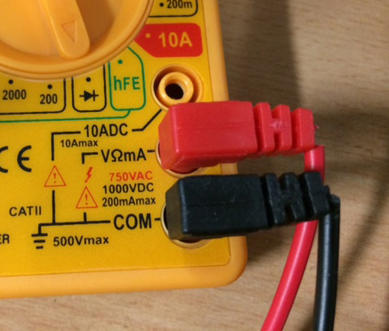

Multimeter testing
Table of Contents
1 The multimeter
- As you progress through Systems & Control, you'll encounter problems with circuits. A big part of being an engineer is being able to diagnose problems and repair them.
- There are lots of things a multimeter can do, but in this activity, we'll focus on just two of them.
2 Continuity
About Continuity Testing
- Electronic current can only flow along unbroken wires. Even a break in a track the thickness of a hair will stop a circuit from working - sometimes, human eyes simply can't see if there's a problem. This is when the continuity setting on a multimeter is helpful; it will only give you a reading if there is a continous connection (hence the name) between the two probes.
- Every time you pick up a multimeter, the first thing you should do is check if it is working correctly. As they are used all day long by lots of students, people forget to turn them off, the probe wires get damaged, the probes come loose from their sockets and so on. A continuity check from one probe straight to the other will confirm that everything is ok.
- If you look carefully, you'll see that the insulation on the probes in the picture below has started to break down, and the wires are hanging slightly. These will break soon, hence the importance of testing!

- Step 1: Check that the black (known as common) probe is plugged firmly into the socket labelled COM, and the red probe is plugged into the "VΩ mA" socket.
- Step 2: Slowly turn the dial on the front of the meter round until the arrow-head is pointing at the continuity symbol (which looks like an arrow-head with a line next to it on most meters). This is shown in the picture above.
- Step 3: The meter should now show a single number 1 on its display. This is telling you that the two probes aren't currently directly connected together.
- Step 4: To test the probes are working properly, touch the probes together and wait a moment. The display should change to a tree digit number; most likely 001, 002 or 003. This is telling you that there is a connection between the probes, and that your meter is working.
- You are now set up to test continuity. Remember that this won't test resistors and other components - it's only for testing wire runs at the moment.
Test it
- You can see how the meter works by touching the probes on the metal part of a steel ruler, the jaws of a set of pliers or any other object made from metal. While it looks daunting, a PCB with no components on it is essentially just strips of metal stuck to pieces of board.
- Test your multi-core link wire by touching one probe (it doesn't matter which when testing continuity) on the track next to the letter D, and the other on the track near the letter C (or on the solder point there, if thats easier). As long as the reading changes from 1 to something else, your soldering was sucessful.
- You now need to test the other link wire, and the two track repairs.
- Extension: Can you suggest a way that you could check both wire links and both track repairs all at the same time?
3 Resistance
About Resistance
- Resistance is a measure of how much a component reduces the flow of current in a circuit, and is measured on Ohms (Ω).
- All components add some amount of resistance to a circuit. Resistors are the most common and easily understood, but motors, lamps and such like also add to the resistance.
- In this exercise, we will test each of the resistors in your circuit, by setting the meter appropriately. We will to the first resistor together.
Try it
- Step 1: Ensure the probes are in the same sockets as they were for continuity.
- Step 2: The section of a multimeter for measuring resistance is indicated with an Ω symbol on the meter, like the picture below:

- Each of the numbers in this section tells you the maximum amount of resistance the meter can detect at each setting. To get the most accurate reading, we choose the next setting up from the value we're testing for.
- So for instance, if you wanted to test a 100Ω resistor, you'd set the meter to 200.
- Or if I had a 1.5 million Ohm (1,500,000 Ω) resistor, I'd use the 2000k setting. Just like in science, putting k on the end of a number is shorthand for writing 000. In this case, 2000k is the same as writing 2,000,000.
- What setting would I need if I wanted to test a 1k resistor?
- Step 3: We're going to test the 18k resistor together, so we'll need to set the meter to 20k.
- Step 4: Flip the PCB over to the solder side, and put the probes on the solder blobs either side of the 18k label.
- Step 5: While the reading will bounce around a bit, you'll should be able to get a fairly steady reading. If the display stays on 1, then your soldering was unsucessful. On my soldering license, I got a reading of 17.78. Yours will almost certainly be different!
- So my 18k resistor actually has a resistance of 17,780Ω. Remember that our gold-banded resistors have a tolerance of ±5%, so I'd expect to get between 17,100Ω and 18,900Ω from this resistor. In my case, the test was passed!
(Don't worry too much about the error part, if you're not confident with percentages. You'll cover this in maths lessons!)
- If you got no reading at all, one likely explanation is that you've not soldered the resistor in properly.
- Another possibility is that you picked up the wrong resistor and soldered that in; check the coloured bands!
- One last possibility is that you've accidentally "bridged" the bottom 18k solder pad and the bottom 470r resistor together. There should be a little gap between them!
Test it
- Now its your turn. Set the multimeter up for each of the remaining resistors, and test each one individually.
- Extension: Can you think of a way to test all the resistors at once? They should add up to 21k ±5% in total.
4 Independent work
Your turn
- You now have the ability to measure resistance and continuity. Let's see if you can apply it to new problems.
Try it
- Put a small amount of water in a cup, and measure its resistance. You might have to try several of the meter settings to get a reading.
- Measure the resistance of your fingertip, with the probes about 10mm apart.
- Measure the resistance on the back of your hand, with the probes about 10mm apart. Don't worry if you can't get a reading… The meter can only measure up to 2M Ohms.
- Which measurement is lower? Why do you think this is?
- The continuity checker can also test that diodes work correctly. Set the meter for continuity, and try putting the probes one way then the other either side of the diode. What happens? Why do you think this is?
- There are a series of letters on the solder-side of the PCB from A to F. Before you perform the next test, make a prediction as to what the result will be.
- With the correct probe placed on solder-point A, which is the last letter on the PCB that you should be able to get a continuity reading on? Why?
- Complete the table at the bottom of the task sheet using your newly acquired skills.